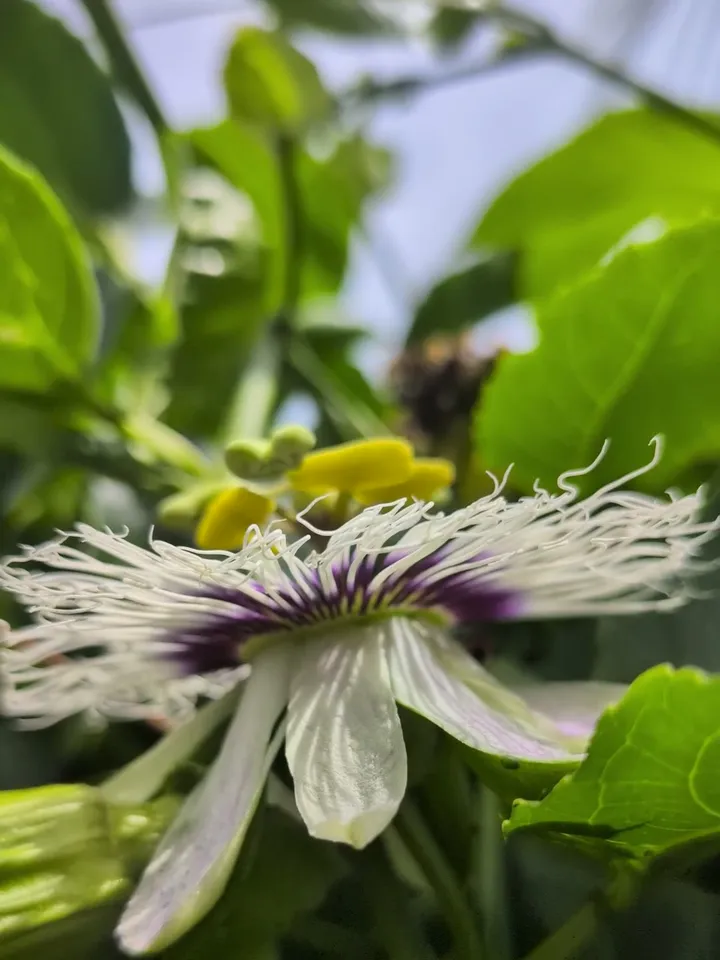

Wild / Passion fruit flowers
Passion fruit flowers and pollination
പാഷൻ ഫ്രൂട്ട്
Passiflora edulis
A passion fruit vine can be covered in flowers and still give small or hollow fruit. The reason is usually pollination - and you can help it by hand.

Quick facts
The parts of the flower
- Corona - the ring of wavy white and purple threads. It attracts bees.
- Anthers - five yellow parts that hold the pollen.
- Stigmas - three parts at the top that catch the pollen.
- Ovary - the green ball in the centre, which grows into the fruit.
The anthers sit below the stigmas, so pollen does not fall onto them by itself. A bee (or your hand) has to carry it up.
How to hand-pollinate
- Do it in the morning, when the flower is fully open.
- Use a small soft paintbrush or a cotton bud to pick up yellow pollen from the anthers.
- Touch the pollen onto all three stigmas.
- For yellow passion fruit, use pollen from a different vine - it usually will not set fruit with its own pollen.
More pollen on the stigmas means more seeds, and more seeds mean a bigger, juicier fruit.
Signs of poor pollination
- Flowers drop off without making fruit.
- Fruit stays small.
- Fruit feels light and is hollow inside, with little juice.
Watch our videos
പാഷൻ ഫ്രൂട്ട് ചെറുതാകുന്നോ? കാരണം ഇതാണ്! (in Malayalam). Watch on YouTube
ഈ പൂവിൽ ഒരു രഹസ്യം ഒളിഞ്ഞിരിക്കുന്നു… (in Malayalam). Watch on YouTube
Our photos

Questions
Why are my passion fruits hollow?
Usually because of poor pollination. A fruit needs at least about 100 seeds to fill out; with less pollen, fewer seeds form and the fruit is light and hollow.
Why is my passion fruit vine flowering but not fruiting?
Most often there are not enough bees to move the pollen. Hand-pollinating in the morning can help. Yellow passion fruit also needs pollen from a different vine.
Which insects pollinate passion fruit?
Carpenter bees and honey bees. Carpenter bees are bigger and do the job very well when there are enough of them. Wind does not help because the pollen is heavy and sticky.
Do I need two passion fruit vines?
For yellow passion fruit, yes - it needs pollen from another vine. Planting more than one variety can also help other types set more fruit.
Sources
More from the farm
See all our wildlife and farm pages, or watch our videos on YouTube.
Was this page useful?
Your message goes to Binu at Australian Jeevitham. Please do not put passwords or bank details in it.
General information. Checked against the sources above. For an animal emergency, contact the services named on this page. Last updated: 11 November 2026.